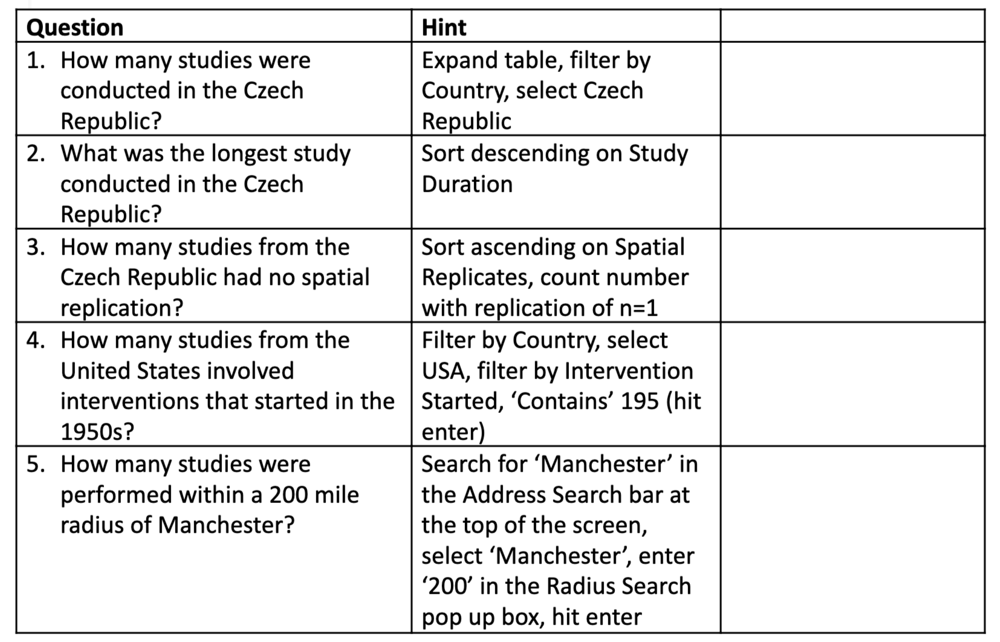
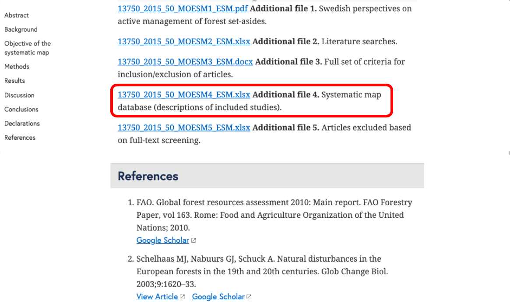
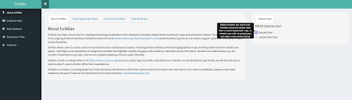

4. Systematic mapping synthesis
This session will introduce common ways in which systematic map results can be visualised through narrative synthesis. Visualisations will be described that help to display the methods used in the review, the nature of the evidence identified, the results of assessments of relevance and validity, and any synthesis of study findings. Specific examples will include flow diagrams, evidence atlases, heat maps, and pivot tables/charts. In a practical exercise, you'll spend time examining several key outputs from systematic maps: an evidence atlas, a map database, and heat maps.
Learning objectives
- To understand what a systematic map synthesis should contain
- To appreciate the key principles of how mapping synthesis should be conducted
- To understand the key outputs of systematic map synthesis
- To be aware of some of the tools available to support systematic map synthesis and presentation
- To gain experience of some real systematic map outputs
To begin, watch the following presentation.
You can find the lecture handouts here.
Practical exercise
In this exercise, you will work with a range of systematic mapping outputs.
1. Evidence atlas
Follow this link to an evidence atlas from a systematic map published in Environmental Evidence: http://bit.ly/EvidenceAtlas.
Looking at the evidence atlas, think about the following questions:
- What is the visualisation showing?
- What do the legend labels mean in the top right corner of the screen?
- What happens when you toggle the legend labels on and off (click the open/closed ‘eye’ symbol to the right of each legend label)?
- What data is stored in the system?
- How is interactivity built into the system and what can you do to ‘play’ with the data?
Can you replicate the following view by toggling legend labels and displaying the map database table?
Once you’ve had chance to play around with the map, answer the following questions:
2. Map database
Follow this link to a published systematic map on the impacts of forest management on biodiversity:
Can you find the systematic map database file? (Hint – it’s not very easy to find, keep scrolling down):
Open the map database and try to filter out just the studies conducted in Finland – how easy is it? Notice anything challenging?
If you managed to do that, try filtering just the studies that recorded Arthropod Richness (column AB; ‘Outcome categories’)… not so easy! There is a way to do it in this case – click filter, then select ‘contains’ and type in ArthRich – that will bring back any cell that contains that text. This approach won’t work if you’re searching for something with text that appears in more than one category, however: e.g. if you have ‘vegetation’ as one category and ‘vegetation density’ as another, you cannot search for ‘vegetation’ and get only the cells containing ‘vegetation’ and not ‘vegetation density’. Basically, Excel is not built for this purpose (but everyone still uses it) – what we really need is database software, OR to design our databases carefully to allow rapid analysis.
Have a bit more of a look around – what is contained in the ‘Description’ worksheet? What’s in ‘Intervention and outcome codes’?
3. Heat map
Go to the EviAtlas web app here: https://estech.shinyapps.io/eviatlas/
EviAtlas is an Open Source tool for producing visualisations for systematic reviews and maps, including heat maps.
Load up the sample data and proceed to the Heatmap tab. Take some time to look at the evidence atlas and other visualisations if you want:
In the Heatmap tab you can select two variables to cross-tabulate in a table:
Select two variables and see what the data look like. Bear in mind that heat maps are intended for discrete, categorical data (i.e. not continuous data and not free text). Try out ‘Period’ and ‘Measurement.quarter’, for example:
This nicely shows that Q2-Q3 (northern hemisphere summer) and full year (Q1-Q4) (Q stands for ‘quarter) were the most common, with a small spike in Q3 studies in the early 2000s.
Try out some other heat maps – find anything interesting? Do you notice any variables that could be better formatted in the underlying data, perhaps?
Next, we will think about how to report the findings of a systematic map in the final report.
Move to the next module!